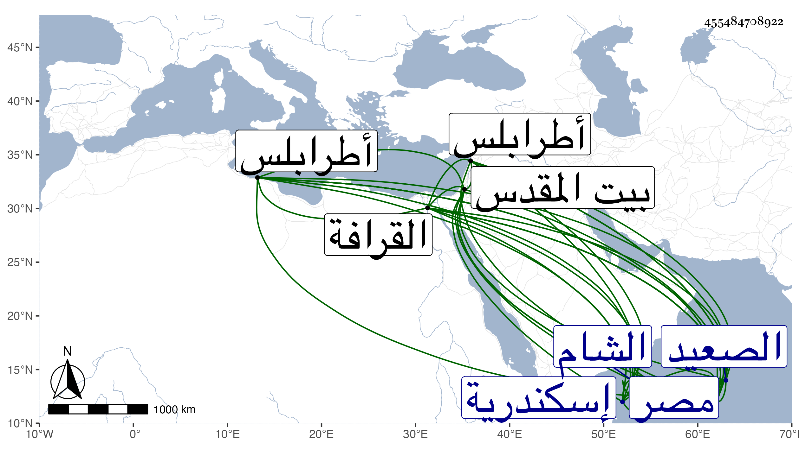

0902Sakhawi.DawLamic.ITO20230111-ara1.EIS1600.455484708922
Biography ID: 455484708922
400
محمد البهاء بن القطان أخو الذي قبله ووالد البدر محمد الآتي . ولد في ثاني عشر صفر سنة ثلاث أو أربع وثمانين وسبعمائة وربما جزم بالثاني بمصر ونشأ بها في كنف أبيه فحفظ القرآن وكتبا وأسمع على الحافظين العراقي والهيثمي والأبناسي والمطرز وعزيز الدين المليجي والشهاب الجوهري والفرسيسي وناصر الدين بن الفرات والنجم البالسي والشمس بن المكين المالكي والشرف القدسي في آخرين منهم فيما أخبرني به التقى بن حاتم ، وأجاز له الصلاح البلبيسي والمجد اللغوي والشرف بن المقري وطائفة وتفقه بأبيه وعنه أخذ في الفرائض والأصول والعربية وكذا أخذ في الفقه والفرائض عن الشمس العراقي وفي الفرائض فقط عن الصدر السويفي وفي الفقه فقط عن البيجوري والزين القمني بل حضر دروس السراج البلقيني وولديه في الخشابية وغيرها وفي العربية عن ابن عمار وتردد إلى العز بن جماعة وغيره من شيوخ العصر وأخذ في التصوف عن الشمس البلالي وصحب جماعة من الصالحين واختص بهم ، وحج مرارا منها في سنة سبع وثمانمائة ، وزار بيت المقدس ودخل الشام غير مرة أولها في سنة عشرين وكذا دخل إسكندرية والصعيد وغيرها وناب في القضاء عن شيخنا فمن بعده تصدر بجامعي عمرو والقراء ودرس بالخروبية البدرية بمصر نيابة عن ابن الولوي السفطي في أيام قضائه ثم استقر به شيخنا فيه استقلالا ولكن انتزعه منه المناوي لظنه أنه كان معه نيابة وقرر فيه ولده زين الدين وما حمد في ذلك ثم انتزعها ولده منه في حياة أبيه وخطب بالجامع الجديد من مصر وعين لقضاء طرابلس فما تم ، وكان فاضلا خيرا دينا متعبدا ورعا متقشفا صلبا في ديانته قليل المحاباة سليم الفطرة محبا في الرواية حدث بغالب مروياته ودرس وأفتى حملت عنه أشياء وكان يثني علي كثيرا ويتردد إلي بسبب التعرف لمروياته . مات في ليلة ثاني عشر أو خامس عشر رجب سنة خمس وخمسين بمصر وصلى عليه من الغد ودفن بالقرافة رحمه الله وإيانا .
